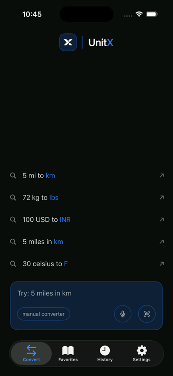
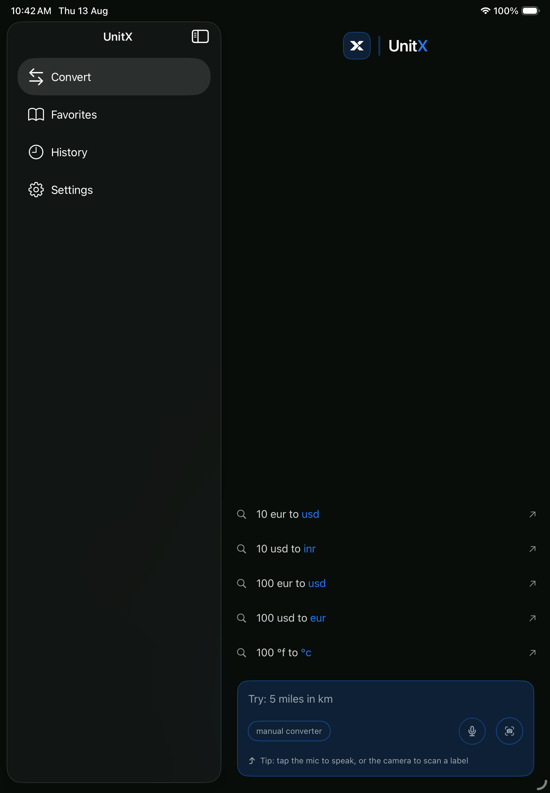

Ask naturally
Start with the words you already have: a value, a unit, and a goal.
Smart unit converter
A calmer way to turn everyday questions into answers—whether you type naturally, choose exact controls, or scan the number in front of you.
iPhone & Apple WatchNatural language inputCamera assisted

Why UnitX
UnitX keeps the common path immediate and adds precision only when it helps.
Start with the words you already have: a value, a unit, and a goal.
Switch to clear category and unit controls when the request needs to be explicit.
Use camera entry to turn printed values into a useful starting point.
